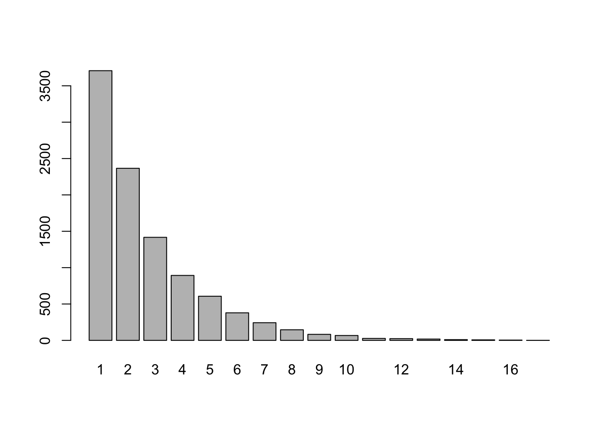

B Simulating Probability in R
We can use repeated sampling of a chance experiment to estimate the probability of some event. See Section A.5 for a review of sampling commands. The examples here were chosen to provide a good range of sampling scenarios that you may find useful in this class, and have been ordered roughly by my view of the complexity of the coding involved.
We start with a good old-fashioned die.
B.1 Rolling a 10-sided die
We roll a 10 sided die. Find the probability that the first time we roll an 8 or higher is on the 5th roll.
Scratch Work
- Simulate rolling a 10-sided die 5 times. (Sample 5 times with replacement from the vector 1:10.)
For the purposes of this discussion, let’s say a sequence of 5 rolls is good if the first 4 rolls are all less than 8, and the last roll is 8 or greater.
- We want code to check whether a random sequence of 5 rolls is good.
Let’s look at the actual rolls first:
## [1] 10 9 6 10 7We need to check 5 things: Are rolls 1-4 all less than 8, and is roll 5 greater than 8? We can ask these five questions and store the answers in a vector:
## [1] FALSE FALSE TRUE FALSE FALSERecal, the sum() of a logical vector counts the number of TRUE values. We need the sum to be 5 to have a good sequence of 5 rolls.
## [1] 1I think we’re ready!!
Final Code
trials = 10000
results = c() # vector to store results of the trials
die = 1:10
for (i in 1:trials){
rolls = sample(die,5,replace=TRUE) # roll the 10-sided die 5 times
good_count=sum(c(rolls[1:4]<8,rolls[5]>=8)) #how many of the 5 rolls "do the right thing"
results=c(results,good_count) # update the results vector
}The results of the simulation:
## results
## 0 1 2 3 4 5
## 57 526 2098 3747 2832 740Based on our simulation, we estimate the probability of a good sequence of 5 rolls by the proportion of time the results vector took a value of 5.
## [1] 0.074This estimate is likely very close to what we calculate by our counting tools \[\frac{7^4\cdot 3}{10^5} \approx .07203.\]
B.2 Difference of two dice
If you roll 2 6-sided dice, what’s the likelihood that their values are 1 apart.
Strategy: roll the two dice, record the absolute value of their difference, repeat!
Code:
trials = 10000
die_1 = 1:6
die_2 = 1:6
results = c()
for (i in 1:trials){
roll_1 = sample(die_1,1)
roll_2 = sample(die_2,1)
difference = abs(roll_1-roll_2)
results[i] = difference
}Results:
## results
## 0 1 2 3 4 5
## 1627 2837 2201 1655 1138 542Conclusion: It appears we should expect the difference in the two dice to be 1 about 28.4% of the time.
Note: In this example we added to the results vector by specifying results[i] in each trial, as opposed to the concatenation method we followed in the 10-sided die example.
Referring to the 6x6 grid recording the difference for each of the 36 possible outcomes in Table 3.5, we would find the actual probability equal to 10/36 \(\approx\) 0.278.
B.3 Flipping a coin
If you flip a coin 5 times, how likely is it to get exactly 1 heads?
One approach:
- Build a coin vector:
coin = c("H","T") - Build a vector for recording outcome of five flips:
flips = sample(coin,size=5,replace=TRUE) - Find how many of these five flips are heads with
sum(flips=="H") - Repeat!
The following code plays this ‘flip a coin 5 times’ game for 10000 trials, records for each trial how many heads we flipped, and then outputs the frequency table.
coin = c("H","T")
trials = 10000
heads = c() # vector for storing heads flipped each trial
for (i in 1:trials){
flips = sample(coin,size=5,replace=TRUE)
heads[i] = sum(flips == "H")
}
table(heads)## heads
## 0 1 2 3 4 5
## 314 1557 3128 3108 1570 323Conclusion: It appears we should expect to flip exactly 1 heads in 5 tries about 15.6% of the time.
By our counting tools, we can calculate the actual probability of getting exactly one heads in 5 flips as follows:
\[5\cdot \left(\frac{1}{2}\right)^5 = 0.15625.\]
B.4 Marbles from an urn
An urn contains 100 orange and 200 green marbles. If you draw 8 marbles from the urn at random (without replacement), how likely is it that more than 5 of them are orange?
urn = rep(c("O","G"),c(100,200))
trials = 10000
results = c()
for (i in 1:trials){
grab = sample(urn,8,replace=FALSE)
oranges = sum(grab=="O")
results[i] = oranges
}
table(results)## results
## 0 1 2 3 4 5 6 7 8
## 358 1614 2791 2708 1695 656 151 26 1We can enter sum(results > 5) to see how often we grabbed more than 5 orange marbles in our sample of size 8, and sum(results > 5)/trials is a good estimate of the likelihood of this happening.
Conclusion: It appears we should expect the more than 5 orange marbles in our sample of 8 about 1.8% of the time:
## [1] 0.0178This question is a classic “good potatoes/bad potatoes” problem, and by our counting techniques, we know the probability is \[\frac{\binom{100}{6}\cdot\binom{200}{2}}{\binom{300}{8}}+ \frac{\binom{100}{7}\cdot\binom{200}{1}}{\binom{300}{8}}+ \frac{\binom{100}{8}\cdot\binom{200}{0}}{\binom{300}{8}},\] which we can evaluate in R as a check:
## [1] 0.01830405Note: After studying common named discrete probability distributions, we will see that R has a nice built-in command for doing these sorts of computations.
B.5 Splitting a set into multiple subsets
A class has 12 people: 6 juniors, 4 sophomores, and 2 first-years. The class is randomly divided into 3 subgroups of size 5, 4, and 3. What is the probability that the 2 first-years are in the same subgroup?
One approach:
Build the class:
class = rep(c("J","S","F"),c(6,4,2))Partition the members into three subgroups of size 5, 4, and 3. Our approach: shuffle the
classvector (find a random permutation), take the first five in this permutation for subgroup 1, the next 4 for subgroup 2, and the last 3 for subgroup 3.
shuffle = sample(class)
sub1 = shuffle[1:5]
sub2 = shuffle[6:9]
sub3 = shuffle[10:12]
# the code below displays the subgroups as a check
cat("Subgroup 1: ", sub1, "\n",
"Subgroup 2: ", sub2, "\n",
"Subgroup 3: ", sub3, sep = "")## Subgroup 1: JSSJF
## Subgroup 2: JFJS
## Subgroup 3: JJS- Count the number of first-years in each subgroup, and record these numbers as a vector of length 3:
## [1] 1 1 0- The two first-years are in the same subgroup if and only if
countcontains a 2. The following code uses anifelse()command to record 1 if both first-years are in the same group, and 0 if not.
## [1] 0Final Code
We put it all together now. In particular, we repeat the following process for 10000 trials: Partition the class into the three subgroups, count the “F”s in each subgroup, record 1 if both “F”s find themselves in the same group, and 0 otherwise. We store these 1s and 0s in the vector results.
class = rep(c("J","S","F"),c(6,4,2))
trials = 10000
results = c()
for (i in 1:trials){
shuffle = sample(class) #randomly shuffles the 12 people.
sub1 = shuffle[1:5] # first 5 in the random shuffling go to subgroup 1
sub2 = shuffle[6:9] # next 4 to subgroup 2
sub3 = shuffle[10:12] # last 3 to subgroup 3
count = c(sum(sub1=="F"),sum(sub2=="F"),sum(sub3=="F"))
#are both "F"s in the same subgroup? We record 1 if "yes", and 0 if "no"
results[i] = ifelse(2 %in% count,1,0)
}
table(results)## results
## 0 1
## 7098 2902Based on this simulation, we estimate the probability that both first-years end up in the same subgroup as
## [1] 0.2902Using our counting tools to calculate the probability:
\[\frac{\binom{10}{3~4~3}+\binom{10}{5~2~3}+\binom{10}{5~4~1}}{\binom{12}{5~4~3}}\] which evaluates to 7980/27720 \(\approx 0.288\):
(factorial(10)/(6*24*6)+factorial(10)/(120*2*6)+factorial(10)/(120*24*1))/(factorial(12)/(120*24*6))## [1] 0.2878788B.6 Oregon License Plates
Classic Oregon license plates consist of 3 letters (A-Z) followed by 3 numbers (0-9). Find the probability that a randomly selected plate has two 8s.
Scratch Work
- Build a random plate. We want three random numbers (repeats ok), followed by three random letters (repeats ok). This means we sample from 0-9 with replacement 3 times, then sample from A-Z with replacement 3 times. R comes with some built-in data sets and vectors, and one of them is
LETTERS(the vectorc('A','B',...,'Z')).
## [1] "V" "J" "Z" "5" "4" "6"- We can record the number of “8”s in the plate
## [1] 0Final Code
trials = 10000
results = c()
for (i in 1:trials){
plate = c(sample(LETTERS,3,replace=TRUE),
sample(0:9,3,replace=TRUE)) #build a plate
eights = sum(plate=="8") # count the 8s
results = c(results,eights) # update the results vector
}
table(results)## results
## 0 1 2 3
## 7281 2436 277 6Based on this simulation, we estimate the probability of having a plate with exactly 2 “8”s
## [1] 0.0277Using our counting tools to calculate the probability:
\[\frac{26\cdot 26\cdot 26 \cdot \binom{3}{2} \cdot 1 \cdot 1 \cdot 9}{26^3\cdot 10^3}= \frac{27}{1000} = 0.027.\]
B.7 Pollsters
In an upcoming election for mayor of a large city, a pollster plans to predict the winner of the popular vote by taking a random sample of 1000 voters and declaring that the winner will be the one obtaining the most votes in his sample. Suppose that 48 percent of the voters plan to vote for the Republican candidate and 52 percent plan to vote for the Democratic candidate. To get some idea of how reasonable the pollster’s plan is, write a program to make this prediction by simulation. Repeat the simulation 1000 times and see how many times the pollster’s prediction would come true.
First, let’s create and summarize a single poll of 1000 people from a population in which 52 percent are “D”, and 48 percent are “R”.
## one_poll
## D R
## 525 475Of course, the goal is to use the poll to predict the winner of the election.
We use the sum() command to count how many elements in one_poll equal “D” (use those double equal signs), and the ifelse() command to record the predicted winner.
## [1] "Dem wins"Now, our goal is to repeat this sampling and prediction procedure 10000 times, and keep track of the predicted winner in each trial.
dem = .52 #proportion voting "D"
rep = 1 - dem # proportion voting "R"
poll_size = 1000 # poll sample size
trials = 10000
results = c()
for (i in 1:trials){
poll = sample(c("D","R"),
size = poll_size,
replace = TRUE,
prob = c(dem,rep))
results=c(results,
ifelse(sum(poll == "D") > poll_size/2,"D","Tie or R"))
}
table(results)## results
## D Tie or R
## 8915 1085This table gives us a sense of the likelihood that the pollsters plan will result in an accurate prediction of which candidate will win the election. Based on our simulation, that likelihood is about 0.891.
B.8 Matching Birthdays
Suppose you ask \(n\) random people their birthday (month and day, disregarding year). What is the probability that at least one of them share your birthday? What is the probability that at least two of them share the same birthday? (Assume 365 days in a year - ignore leap days.)
We tackle the first question by first computing the probability that none of the \(n\) people share my birthday. The probability that a random person does not have my birthday is \(\frac{364}{365}\), and the probability that \(n\) random people all do not have my birthday is \(\left(\frac{364}{365}\right)^n\).
The complement of this event is that at least one of the \(n\) people has my birthday, and so the probability of this will be \(1- \left(\frac{364}{365}\right)^n\).
We can write a function in R to compute this probability for various values of \(n\).
For instance, in a group of 15 people here’s the probability that someone shares my birthday:
## [1] 0.04031703Not too likely!
For the second question, we begin by calculating the probability that no one in a group of \(n\) people shares the same birthday as anyone else.
So, we need all \(n\) people to have a different birthday. This probability is found in essentially the same way that you answered #6 in Homework 2, and it equals \[\frac{P^n_r}{365^n}=\frac{365\cdot 364 \cdot \cdots \cdot (365-n+1)}{365^n}.\] So, the probability that at least two people share the same birthday, which is the complement of “no one shares the same birthday” is \[1 - \frac{365\cdot 364 \cdot \cdots \cdot (365-n+1)}{365^n}.\]
For instance, in a group of 6 people, the probability that at least two people share a birthday is \[1-1 \cdot \frac{364}{365}\cdot\frac{363}{365}\cdot \frac{362}{365}\cdot\frac{361}{365}\cdot\frac{360}{365}\approx0.04.\]
Here’s a function that will compute this probability for any group size \(n\).
For instance, in a group of 15 people here’s the probability that at least two people share a birthday
## [1] 0.2529013Whoa! A 25 percent chance! In fact, it turns out we only need 23 people gathered in a room to have a 50 percent chance that two of them share a birthday! Also, with a group of 59 people we have a 99 percent chance of a birthday match: prob_shared_bday(59)=0.993.
Here’s a graph of these two probabilities for values of \(1 \leq n \leq 100\).
sh=c()
my=c()
for (i in 1:100){
sh=c(sh,prob_shared_bday(i))
my=c(my,prob_my_bday(i))
}
df <- data.frame(group_size=1:100,my_bday=my,shared_bday=sh)
df_long <- df%>% pivot_longer(cols=c(my_bday,shared_bday), names_to = "question", values_to = "probability")
ggplot(df_long)+
geom_line(aes(x=group_size,y=probability,col=question))
B.9 Flipping Coins with Fibonacci
Let \(X\) equal the number of flips required to observe heads on consecutive flips. For instance, \(X = 6\) in the flip sequence “T H T T H H”. The random variable \(X\) is discrete, taking on countably infinite values 2, 3, 4, \(\ldots\) .
The probability function for \(X\) is \[p(x) = \frac{F_{x+1}}{2^x} \text{ for } x = 2, 3, 4, \ldots,\] where \(F_n\) is the \(n\)th Fibonacci number. (\(F_n\) is defined recursively: \(F_1 = F_2 = 1\), and for \(n \geq 3\), \(F_n = F_{n-1}+F_{n-2}\).)
Deriving this function requires some satisfying work, which we work through in class.
We can also approximate the probability function by simulation.
trials = 10000
results = c() #stores result
for (i in 1:trials){
flips = 0
consecutive_H = 0
while (consecutive_H<2){
flips = flips + 1 #recording flips made in this trial
consecutive_H = ifelse(sample(c("H","T"),1)=="H",consecutive_H+1,0)
}
results[i]=flips #updates results to include flips required for consec heads in this trial
}We note that the maximum number of flips it took to get consecutive Heads in these trials was max(results) = 40! (that’s not a factorial symbol, just me exclaiming). So we don’t list the full table of results here, just the first 10 relative frequencies, which provide estimates for the probability function:
## results
## 2 3 4 5 6 7 8 9 10 11
## 0.2483 0.1248 0.1263 0.0932 0.0815 0.0617 0.0533 0.0409 0.0329 0.0274These values compare closely to the actual probability values \(F_{x+1}/2^x\):
| x | 2 | 3 | 4 | 5 | 6 | 7 | 8 | 9 | 10 | 11 |
| Rel_freq | 0.2483 | 0.1248 | 0.1263 | 0.0932 | 0.0815 | 0.0617 | 0.0533 | 0.0409 | 0.0329 | 0.0274 |
| p(x) | 0.2500 | 0.1250 | 0.1250 | 0.0938 | 0.0781 | 0.0625 | 0.0508 | 0.0410 | 0.0332 | 0.0269 |
B.10 Seats on an airplane
I Saw this question on twitter in the summer of 2024, and can’t find it now, but I think it was posted via the MAA and was question on national exam for grade 8.
A small airplane has 4 rows of 3 seats. 8 people board and sit randomly among the 12 seats. Then a couple boards. What is the probability they will be able to sit next to each other in the same row?
Strategy
It is convenient to use a matrix with 4 rows and 3 columns to represent the seats in the plane. Each entry in the matrix is 0 or 1 depending on whether the seat is empty or occupied.
We randomly assign 8 1s to the 12 entries in the matrix, leaving the remaining 4 spots 0, and then we check to see whether one of the rows has adjacent 0s.
First, here’s one way to randomly assign 8 1s and 4 0s to 12 seats (we make a vector with 8 1s and 4 0s, and then take a random permutation of it):
## [1] 0 1 1 0 1 1 0 1 1 1 0 1And here’s how we can store this vector of length 12 in a \(4\times 3\) matrix:
## [,1] [,2] [,3]
## [1,] 0 1 1
## [2,] 0 1 1
## [3,] 0 1 1
## [4,] 1 0 1As the display above suggests, we can extract a value from matrix m by indicating its [row,column]:
## [1] 1One way to check for empty seats next to each other in a given row: See whether the middle entry is 0 AND either the 1st or the third entry is 0. Let’s check each of the rows in the arrangement above:
for (row in 1:4){
result=ifelse((m[row,2]==0) & (m[row,1]==0 | m[row,3]==0),"seats together!","nope")
print(paste("Row",row,result))
}## [1] "Row 1 nope"
## [1] "Row 2 nope"
## [1] "Row 3 nope"
## [1] "Row 4 nope"Ok, we’ve got a plan! In the code below, we use s to record, in each trial, whether the couple can find seats together (s = 1) or they can’t (s = 0).
Final code
trials = 10000
results = c()
for (i in 1:trials){
m=matrix(sample(c(rep(1,8),rep(0,4))),byrow=TRUE,nrow=4)
s=0
for (r in 1:4){
if ((sum(m[r,])<=1)&(m[r,2]==0)){
s = 1
break
}
}
results[i]=s
}
sum(results)/trials## [1] 0.6075This probability seems higher than I first expected it would be, but we can also prove using our counting techniques -we do this in class - that the probability is, in fact, 20/33.
B.11 Drawing names for Homemades
Growing up, I enjoyed a family tradition of exchanging homemade gifts at Christmas. In part, my enjoyment stemmed from the fact that I was the youngest person, by 6 years, in our family of 6. While I would earnestly make and give to some unlucky brother or parent a clay boot I made in the kiln at school, I was likely to receive a far superior gift in return, perhaps a lightweight springboard from my Dad that was just sturdy enough to propel my little body, flipping, into a sea of beanbags in the basement, but not sturdy enough to withstand the weight of a big brother.
I also enjoyed the secrecy of the homemades: the locked doors behind which people worked, the occasional curious scrap of material left behind on a workbench, or a splash of paint in the utility room that wasn’t there earlier. Then there was the celebration of the exchange itself, the pride of giving your gift, the excitement of receiving one, and, after months of speculation, the big reveal as to who everyone drew.
We would usually draw names in late October. If anyone drew their own name, we would immediately stop the process, return all names to the hat, and try again. We kept redrawing, as necessary, until everyone drew a name that wasn’t theirs. Then we were off and running, guarding the secret of our givee’s identity at all costs.
In this example we pursue three questions related to the homemades:
- In our family of 6, what is the probability we will not have to redraw.
Our approach: Create a family vector (called family), and a permutation of family (called draw). For each \(i\), we say Person \(i\) in the family vector draws person \(i\) in the draw vector. So, we have to redraw if the two vectors agree at the same location.
family = c("Dad","Mom","Tom","John","Dave","Mike")
draw = sample(family)
matches = sum(family==draw) # number of locations at which the two vectors agree
redraw = ifelse(matches==0,"No.","Yes.")
print(paste("Redraw?",redraw))## [1] "Redraw? Yes."Let’s check who each person drew to be sure (remember, our code is assuming the ith person in the family vector drew the ith person in the draw vector)
for (i in 1:6){
print(paste(family[i],"drew",draw[i]))
if (family[i]==draw[i]){
print("Dang it! Need to redraw. Names back in the hat.")
break}
}## [1] "Dad drew Mike"
## [1] "Mom drew John"
## [1] "Tom drew Dad"
## [1] "John drew Tom"
## [1] "Dave drew Dave"
## [1] "Dang it! Need to redraw. Names back in the hat."We now estimate the probability of not needing to redraw as follows:
n=6 #size of family
family = 1:n #we use numbers, to protect the innocent
trials=10000
results = c() #record for each trial a 0 for redraw, 1 for no redraw
for (i in 1:trials){
draw = sample(family)
results[i] = ifelse(sum(family == draw)==0,1,0)
}
sum(results)/trials## [1] 0.3681About a 36.8 percent chance of not to redraw.
- What is the expected number of draws needed until we do not need to redraw?
Now in our simulation we want to redraw until we don’t have to, and record how many attempts it took.
n=6 #size of family
family = 1:n #we use numbers, to protect the innocent
trials=10000
results = c() #record for each trial how many attempts it took to get a good draw
for (i in 1:trials){
attempts = 0
draw_again = TRUE
while (draw_again){
attempts = attempts+1
draw = sample(family)
draw_again = ifelse(sum(family == draw)>0,TRUE,FALSE)
}
results[i] = attempts
}
barplot(table(results))
Cripes! Can you believe it took 27 draws on one of the trials? Anyway, our estimate for the expected number of draws needed to get the gift-making off the mark is:
## [1] 2.7191Well THAT number looks somewhat familiar … .
- Over time the family grew as families do until we had 16 in the gift exchange. Does the probability of needing to redraw change substantially with the larger family size?
Let’s just repeat (b) with \(n = 16\).
n=16 #size of family
family = 1:n #we use numbers, to protect the innocent
trials=10000
results = c() #record for each trial how many attempts it took to get a good draw
for (i in 1:trials){
attempts = 0
draw_again = TRUE
while (draw_again){
attempts = attempts+1
draw = sample(family)
draw_again = ifelse(sum(family == draw)>0,TRUE,FALSE)
}
results[i] = attempts
}
barplot(table(results))Based on the trials, we estimate the probability of not needing a redraw in the larger family to be
## [1] 0.3736and our estimate for the expected number of draws to be
## [1] 2.6957Not much movement in the estimates, it seems.
With a function and a for loop we can streamline the process for estimating both of these values for many different family sizes.
hat_draw_sim <- function(n,trials){
# inputs: n - family size; trials - number of trials in simulation
# output: a vector with two values based on a number of trials:
# - first value: estimated prob of redraw for family size n
# - second value: estimated expected number of draws for family size n
family = 1:n
results = c() #record for each trial how many attempts it took to get a good draw
for (i in 1:trials){
attempts = 0
draw_again = TRUE
while (draw_again){
attempts = attempts+1
draw = sample(family)
draw_again = ifelse(sum(family == draw)>0,TRUE,FALSE)
}
results[i] = attempts
}
return(c(sum(results==1)/trials,sum(results)/trials))
}# run simulation for various family sizes
family_size = c(2:10,seq(15,60,5))
prob_redraw = c()
expected_draws = c()
for (i in 1:length(family_size)){
v=hat_draw_sim(family_size[i],trials=10000)
prob_redraw[i] = v[1]
expected_draws[i] = v[2]
}
#table of results
kbl(data.frame(family_size,prob_redraw,expected_draws)) %>% kable_styling(full_width=FALSE)| family_size | prob_redraw | expected_draws |
|---|---|---|
| 2 | 0.4969 | 1.9962 |
| 3 | 0.3291 | 2.9977 |
| 4 | 0.3666 | 2.6749 |
| 5 | 0.3699 | 2.7281 |
| 6 | 0.3693 | 2.6984 |
| 7 | 0.3681 | 2.7714 |
| 8 | 0.3731 | 2.7267 |
| 9 | 0.3709 | 2.7023 |
| 10 | 0.3694 | 2.7034 |
| 15 | 0.3722 | 2.6771 |
| 20 | 0.3681 | 2.7344 |
| 25 | 0.3601 | 2.7229 |
| 30 | 0.3681 | 2.7098 |
| 35 | 0.3737 | 2.7232 |
| 40 | 0.3721 | 2.6930 |
| 45 | 0.3653 | 2.7068 |
| 50 | 0.3706 | 2.7349 |
| 55 | 0.3642 | 2.7267 |
| 60 | 0.3636 | 2.7238 |
It seems the probability of not needing a redraw and the expected number of draws needed both converge fairly quickly to about 0.37ish and 2.7 ish, respectively.
In fact, these values ought to be closely related of one another since “drawing until our first success” sounds like a geometric distribution to me. The probability of success on any given draw somewher in the neighborhood of \(p = .37\), and the expected value for a geometric distribution is \(1/p\), which would be about \(1/.37\), which puts us in the neighborhood of \(2.7\). If these numbers seem frustratingly imprecise, I’m glad, and I invite you to read the following addendum.
Mathematical addendum to the question of drawing names.
The actual expected number of draws, as \(n \to \infty\), is \(e\), and the probability of not needing to redraw approaches \(1/e\) as \(n \to \infty\).
In part (a) of this question, we are counting derangements of a vector.
.A derangement of a vector is a permutation of it in which no element is in its original position. An element of a permutation is called fixed points if it appears in its original position, so a derangement of a vector is a permutation of it with no fixed points. In part (a) we are estimating the probability that a permutation of the family vector is a derangement. There is a nice recursive formula for the number of derangements of a vector of size \(n\), and it can be used to prove that the probability of drawing a derangement converges to \(1/e\) as \(n \to \infty\).